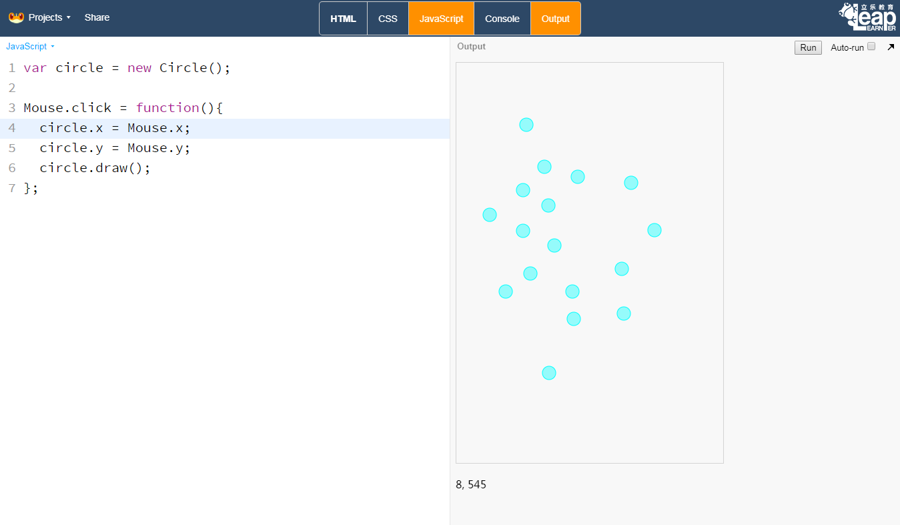

事件¶
鼠标事件¶
事件驱动在JavaScript中是非常常见的一种程序设计模式，通过监测事件的发生，调用预定的函数，从而实现异步执行的效果。
比如说，当鼠标在画布上移动时，鼠标的坐标值会随之而变，这就是一个简单的事件在驱动着坐标值不断的发生变化。
Mouse的属性
属性 x 鼠标当前的x值，可以在画布左下角看到 y 鼠标当前的y值，可以在画布左下角看到
点击事件
当鼠标在画布上点击时，就会触发click事件，如果配置了Mouse.click函数，那么该函数就会执行。
实例：点击成图¶
这个项目的目标是创建一个空白的画布，当鼠标在画布上面点击时，就会在鼠标的位置绘制一个圆圈。
第一步，我们需要创建一个圆，这里我们可以创建一个默认的圆图形。
var circle = new Circle();
第二步，定义一个绘制圆的函数drawEvent，因为我们要将圆绘制在鼠标的位置，因此我们要将圆中心设置为鼠标的位置。
Mouse对象，即鼠标，有两个属性x和y，他们会随着鼠标的移动而发生变化，因此我们只要直接使用这两个属性就可以了。
function drawEvent(){
circle.x = Mouse.x;
circle.y = Mouse.y;
circle.draw();
}
第三步，将函数绑定给click事件
Mouse.click = drawEvent;
完整代码如下，我们用简单的9行代码，就完成了这个例子。
var circle = new Circle();
function drawEvent(){
circle.x = Mouse.x;
circle.y = Mouse.y;
circle.draw();
}
Mouse.click = drawEvent;
一般情况下，我们可以省略函数名，直接定义一个匿名函数，可以简单写成。
var circle = new Circle();
Mouse.click = function(){
circle.x = Mouse.x;
circle.y = Mouse.y;
circle.draw();
}
点击画布，就会在画布上留下一个圆圈。
